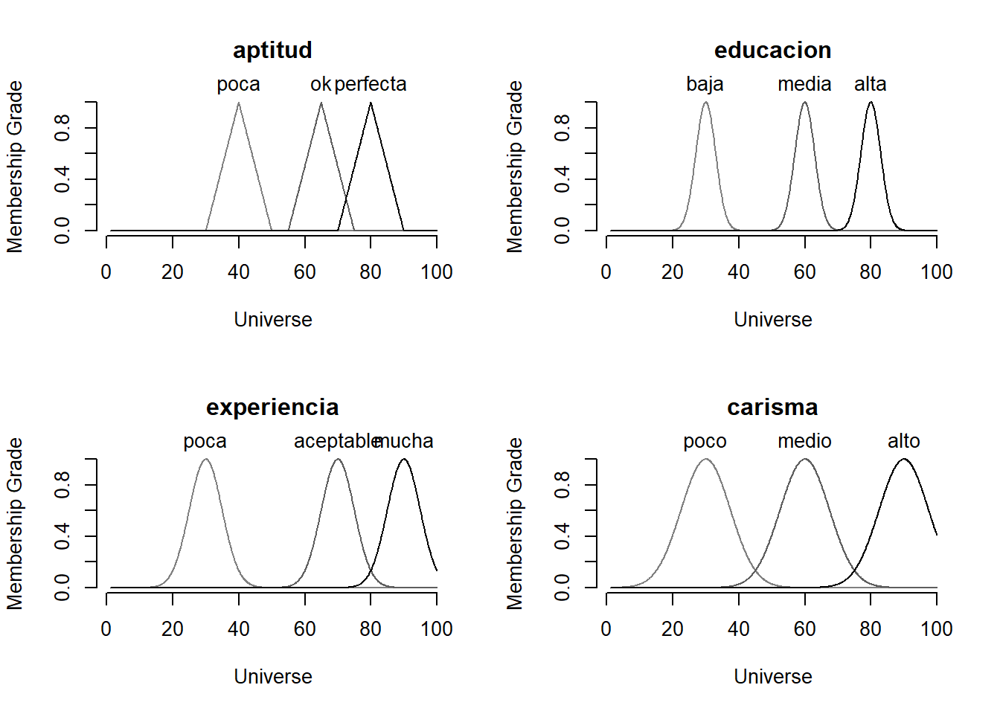
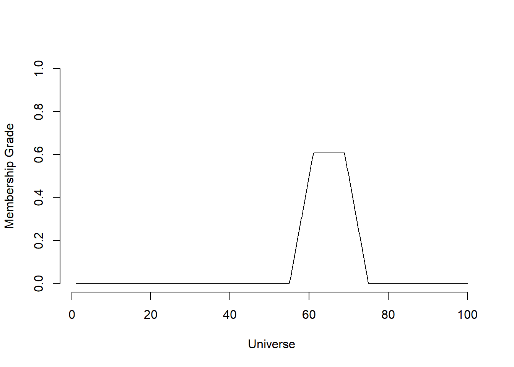
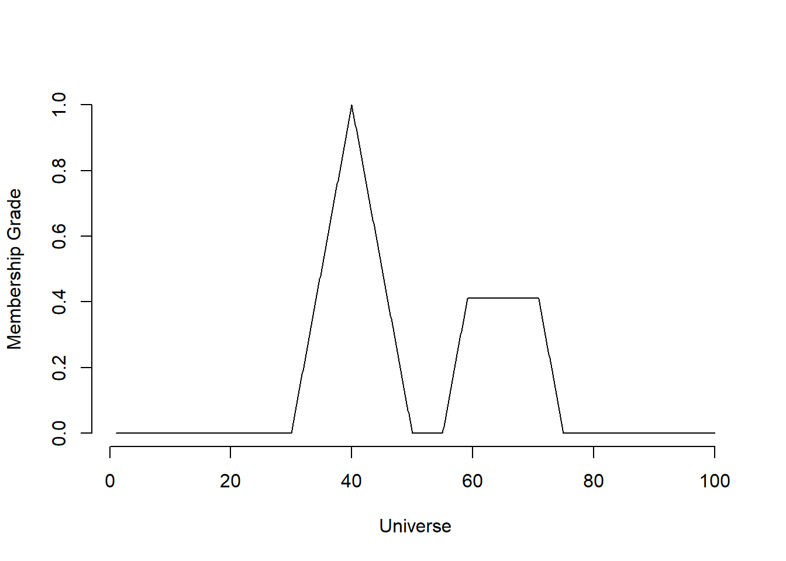

Sección 12 Modelo fuzzy (borroso)
12.1 Objetivo y contextualización
El objetivo consiste en presentar una solución para un problema “borroso”, donde “borroso” significa que los valores de las variables no representan un número exacto (“crisp value”), sino un rango, en términos de un ‘conjunto borroso’ (fuzzy set).
Este ejemplo se adaptó de: Juan De Dios Santos: https://github.com/juandes/FuzzyLogic-R y https://github.com/juandes/FuzzyLogic-R/blob/master/fuzzy_script.R
El problema a solucionar se refiere a la selección de personal basado en la aptitud de las personas, que a su vez depende de tres variables (de entrada).
Todas las variables son cualitativas y borrosas (“fuzzy”) como se muestra a continuación. Los valores (tres) de cada variable de entrada determinan, siguiendo las reglas que se muestran a continuación, el valor de la variable de salida (aptitud).
Se utiliza el paquete de R “sets”: library(sets) Más detalles para el paquete sets se pueden consultar aquí: https://cran.r-project.org/web/packages/sets/index.html
library(sets)## Warning: package 'sets' was built under R version 3.5.3##
## Attaching package: 'sets'## The following object is masked from 'package:igraph':
##
## %>%## The following object is masked from 'package:tidyquant':
##
## %>%## The following objects are masked from 'package:lubridate':
##
## as.interval, interval, is.interval## The following object is masked from 'package:rvest':
##
## %>%## The following object is masked from 'package:forcats':
##
## %>%## The following object is masked from 'package:stringr':
##
## %>%## The following object is masked from 'package:dplyr':
##
## %>%## The following object is masked from 'package:purrr':
##
## %>%## The following object is masked from 'package:tidyr':
##
## %>%12.2 Definir el universo (universe)
- Definir el universo, utilizando las funciones sets_options() y seq(), donde esta última genera una secuencia (sequence) de 1000 números entre 1 y 100 con un paso entre estos de 0.1
sets_options(“universe”, seq(1, 100, 0.1))
sets_options("universe", seq(1, 100, 0.1))12.3 Definir las variables
Aquí, se definene tres variables lingüísticas de entrada y una variable de salida (aquí aptitud).
- Definir las siguientes tres variables de entrada, de forma borrosa (“fuzzy”): -experiencia -educación y -carisma
La variable de salida, que se debe definir también de forma borrosa, es la “aptitud”.
De acuerdo con lo anterior, “borroso” significa aquí, que los valores de las variables no representan un número exacto (“crisp value”), sino un rango que define una variable cualitativa (“lingüística”) por un ‘conjunto borroso’ (fuzzy set).
Por ejemplo, en el siguiente caso la variable (de entrada) “experiencia”, que caracteriza una persona (empleado potencial), está definida por un rango que va desde 30 hasta 90, donde 30 significa “poca” experiencia, el valor 90 significa “mucha” experiencia y un tercer valor 70 en este caso, significa experiencia “aceptable”. Para las demás variables, incluyendo la variable de salida, aplica esta misma “lógica”, definiendolas como variables borrosas de la siguiente forma en R:
variables <- set( experiencia = fuzzy_partition(varnames = c(poca = 30, aceptable = 70, mucha = 90), sd = 5.0), educacion = fuzzy_partition(varnames = c(baja = 30, media = 60, alta = 80), sd = 3.0), carisma = fuzzy_partition(varnames = c(poco = 30, medio = 60, alto = 90), sd = 7.5), aptitud = fuzzy_partition(varnames = c(poca = 40, ok = 65, perfecta = 80), FUN = fuzzy_cone, radius = 10) )
variables <- set(
experiencia = fuzzy_partition(varnames = c(poca = 30, aceptable = 70, mucha = 90),
sd = 5.0),
educacion = fuzzy_partition(varnames = c(baja = 30, media = 60, alta = 80),
sd = 3.0),
carisma = fuzzy_partition(varnames = c(poco = 30, medio = 60,
alto = 90), sd = 7.5),
aptitud = fuzzy_partition(varnames = c(poca = 40, ok = 65, perfecta = 80),
FUN = fuzzy_cone, radius = 10)
)12.4 Fuzzy rules - reglas borrosas
Además, se tienen que definir reglas borrosas (fuzzy rules) de tipo “si-entonces”" (“if-then”):
Por ejemplo, la siguiente regla: Si la experiencia es “aceptable” y la educación es “baja” y el carisma es “poco”, entonces la aptitud es “perfecta”.
…y así se definen sucesivamente un conjunto de reglas borrosas:
rules <- set( fuzzy_rule(experiencia %is% aceptable && educacion %is% baja && carisma %is% poco, aptitud %is% perfecta), fuzzy_rule(experiencia %is% mucha && educacion %is% alta && carisma %is% alto, aptitud %is% poca), fuzzy_rule(experiencia %is% poca, aptitud %is% poca), fuzzy_rule(experiencia %is% aceptable || educacion %is% media || carisma %is% medio, aptitud %is% ok), fuzzy_rule(experiencia %is% mucha && carisma %is% medio, aptitud %is% ok), fuzzy_rule(experiencia %is% mucha && educacion %is% baja && carisma %is% medio, aptitud %is% ok) )
rules <- set(
fuzzy_rule(experiencia %is% aceptable && educacion %is% baja &&
carisma %is% poco, aptitud %is% perfecta),
fuzzy_rule(experiencia %is% mucha && educacion %is% alta &&
carisma %is% alto, aptitud %is% poca),
fuzzy_rule(experiencia %is% poca, aptitud %is% poca),
fuzzy_rule(experiencia %is% aceptable || educacion %is% media ||
carisma %is% medio, aptitud %is% ok),
fuzzy_rule(experiencia %is% mucha && carisma %is% medio,
aptitud %is% ok),
fuzzy_rule(experiencia %is% mucha && educacion %is% baja &&
carisma %is% medio, aptitud %is% ok)
)12.5 Definir el modelo borroso
Como tercer paso se define un modelo borroso de la siguiente forma, utilizando las variables “variables” y “rules”, previamente definidas:
model <- fuzzy_system(variables, rules)
Esto modelo, con sus conjuntos borrosos, se puede mostrar en la pantalla: plot(model)
Observe los diagramas generados para cada una de las variables. En particular, para la variable de entrada “experiencia” se sobrelapan las curvas, que representan los conjuntos borrosos, en el valor “80”. Este sobrelapamiento caracteriza la borrosidad de la variable.
?fuzzy_system
model <- fuzzy_system(variables, rules)
print(model) # imprime las variables y las reglas a la pantalla## A fuzzy system consisting of 4 variables and 6 rules.
##
## Variables:
##
## aptitud(poca, ok, perfecta)
## educacion(baja, media, alta)
## experiencia(poca, aceptable, mucha)
## carisma(poco, medio, alto)
##
## Rules:
##
## experiencia %is% mucha && carisma %is% medio => aptitud %is% ok
## experiencia %is% mucha && educacion %is% alta && carisma %is% => aptitud %is% poca
## alto => aptitud %is% poca
## experiencia %is% mucha && educacion %is% baja && carisma %is% => aptitud %is% ok
## medio => aptitud %is% ok
## experiencia %is% aceptable && educacion %is% baja && carisma %is% => aptitud %is% perfecta
## poco => aptitud %is% perfecta
## experiencia %is% aceptable || educacion %is% media || carisma %is% => aptitud %is% ok
## medio => aptitud %is% ok
## experiencia %is% poca => aptitud %is% pocaplot(model) # imprime los conjuntos borrosos
Nota: En la figura de la “experiencia” la calificación es “aceptable” (70) y “mucha” (90). Si el nivel (de experiencia) es 80, entonces este nivel de experiencia es aproximadamente 0.15 ‘aceptable’, 0.15 ‘mucha’ y 0.0 ‘poca’.
12.6 Dos ejemplos fuzzy
example.1 <- fuzzy_inference(model, list(experiencia = 75, educacion = 0, carisma = 70)) plot(example.1)
example.1 <- fuzzy_inference(model, list(experiencia = 75, educacion = 0,
carisma = 70))
plot(example.1)
Ahora, “defuzzificamos” el ejemplo para transformar los parámetros en un número: gset_defuzzify(example.1, “centroid”) # 65
gset_defuzzify(example.1, "centroid") # 65## [1] 65Según el sistema, la aptitud es 0.65 “ok” (ver el diagrama de la aptitud).
¿Qué pasa, si el nivel de experiencia baja a 30 (75 en el ejemplo anterior)? example.2 <- fuzzy_inference(model, list(experiencia = 30, educacion = 0, carisma = 70)) plot(example.2)
example.2 <- fuzzy_inference(model, list(experiencia = 30, educacion = 0,
carisma = 70))
plot(example.2)
…y se realiza la ‘defuzzificación’: gset_defuzzify(example.2, “largestofmax”)
gset_defuzzify(example.2, "largestofmax")## [1] 40Respuesta:
Si la experiencia baja a 30, el modelo disminuye la aptitud de “ok” a 0.4 (40), ver la figura, lo que significa, que la aptitud es 1.0 “poca” (es decir, la aptitud cambió de “ok” a “poca”).
12.7 Finalmente se debe “resetear” el universo
Reseteando el universo (Reset universe), que se generó al principio, se hace en R de la siguiente forma: sets_options(“universe”, NULL)
sets_options("universe", NULL)